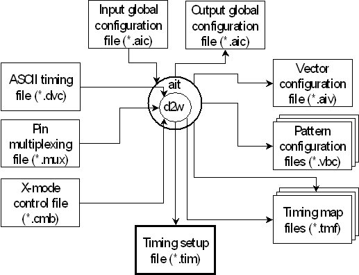

Timing Translation
This chapter explains the timing translation. The timing translation creates an equation based timing setup file and several auxiliary files to be used by the vector translation. Its main input are the ASCII timing file, which contains the definitions of the state characters, and the global configuration file, which controls the operation of the high level tool ait. Both of these must be supplied by the user. A pin configuration file (not shown in the following figure) must also be supplied.
The following figure gives an overview of the input and output of the timing translation:

Besides the global configuration file and the ASCII timing file, which are mandatory, you can also specify an x-mode control file and a pin multiplexing file as additional input. The x-mode control file allows you to restrict the number of waveforms created by the timing translation for an x-mode factor greater than 1 (see The X-Mode Control File (*.cmb) ). The pin multiplexing file serves to map more than one channel to the same pin (see The Pin Multiplexing File (*.mux) ).
The global configuration file exists in two versions, an input version and an output version. The output version is intended for extending or modifying an already existing timing. For more information, see Making Use of the Output Version.
The timing translation creates a timing setup file and several auxiliary files, which serve as input files for the vector translation. These auxiliary files include
- the vector configuration file, which controls the operation of aiv,
- the timing map files, which determine how the state characters of the ASCII vector files are translated into waveform DC/DC power units,
- the pattern configuration files, which associate ASCII device cycles with timing sets.
All these files will be described in the vector translation section.
The section is basically organized by the input files. Features that extend across more than one of the input files are described in separate sections.